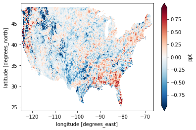

By validating against Oregon State Univeristy's widely used PRISM data set, newer, more refined versions of CHIRPS can made. Unlike CHIRPS 2.0, PRISM has a finer 4x4 resolution, is based only on ground stations, and contains only US data. Due to differing spatial resolutions, we used linear interpolation to create a continuous surface from discrete coordinate points for PRISM.
To create our continuous colormaps, find differences in datasets’ averages and maximums over a period of time, we must utilize two datasets of the same resolution. We linearly interpolated the PRISM grid to match CHIRPS 2.0 resolution to make point comparisons. In other words, we created a continuous surface from discrete coordinate points from PRISM data by taking the weighted average precipitation in mm of the nearest points. Linear interpolation, in comparison to other interpolation methods, assigns coordinates weight based on proximity to the point that we want from the CHIRPS grid.

For the South and Midwest, the rainy season extends from May to the end of the year, which is when we see the most coordinates of extreme differences and the highest differences in those regions. As seasons change, the monthly averages for CHIRPS can be higher. However, the monthly differences of both datasets are typically greater than 2 mm.

For each threshold, we have excluded data that does have precipitation within range.
The annual sum of the number of days with 0 mm of rainfall is used to measure dry days and to determine extreme data between datasets. From this, we see that CHIRPS contains significantly more dry days than PRISM, and by looking at the Midwest concentration, there are also overall days of high precipitation over 5 mm in CHIRPS than PRISM. Since most of the daily data for PRISM seems to live between (0,5) mm of daily precipitation, there is potentially an error detecting drizzle in CHIRPS since it is reading more days with 0 mm PRISM is reading.
fastdtw package used is an approximation of dynamic time warping for computation efficiency


CHIRPS 3.0 CPC IR is based off of NOAA Center for Weather and Climate Prediction MORPHing technique for precipitation estimation using low orbiter satellite observations.
CHIRPS 3.0 ERA5 is based off of European Centre for Medium-Range Weather Forecasts Re-Analysis, which combines data from observation satellites, ground stations, and modeling from historical data.

PERSIANN-CDR stands for Precipitation Estimation from Remotely Sensed Information using Artificial Neural Networks - Climate Data Record from NOAA.
This version of IMERG from NASA uses an algorithm intended to merge and interpolate various sources of satellite data.